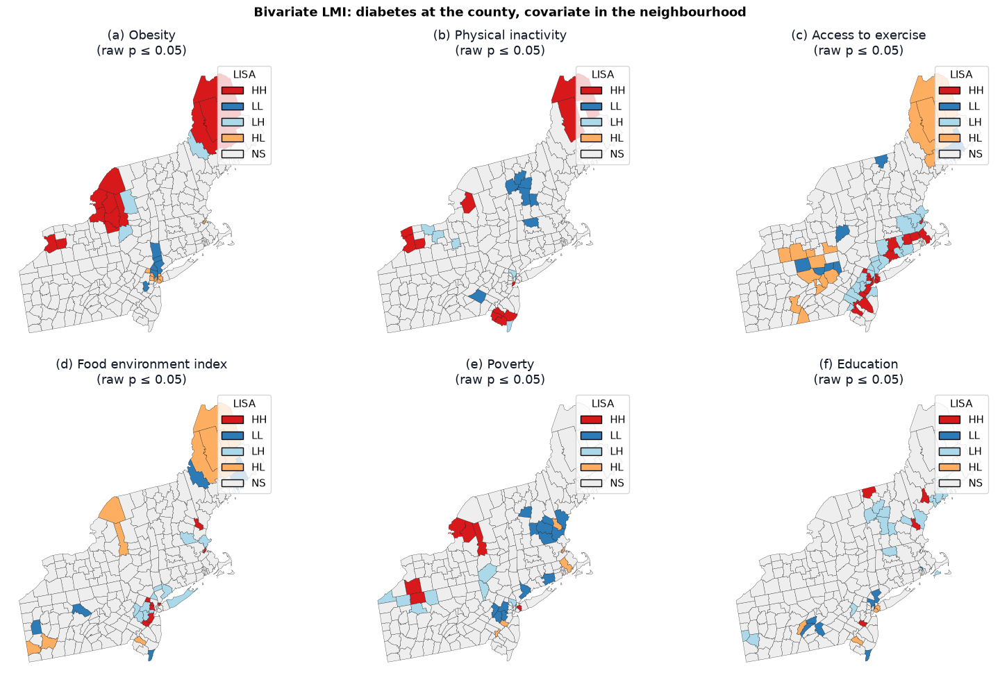

Local Moran’s I (LISA), two competing permutation schemes, multiple-testing correction, cluster mapping, and bivariate LMI clusters. This notebook is Part 2. Spatial Autocorrelation (Chapter 2.5 of 6). The worked example uses diabetes_northeast.shp (217 counties). The methods come from geolattice.spatial_statistics.esda, geolattice.spatial_statistics.cluster, geolattice.spatial_statistics.viz.
Overview
Chapter 2.4’s statistics each collapse the whole map into a single number. Local indicators of spatial association (LISA) do the opposite: one statistic per region, each testable in its own right, showing where, not just whether, clustering happens.
Step
What we do
Local Moran’s I
Decompose global Moran’s I into 217 per-county contributions
Inference
Contrast this library’s two permutation schemes for local significance, and a default setting that silently reports zero significant counties despite an unambiguous global signal
Multiple testing
Apply and stress-test Benjamini-Hochberg FDR correction, including its resolution limit
Mapping
Turn a LISA result into a cluster map, read alongside the choropleth and Moran scatterplot
Companions
Local Geary and Getis-Ord Gi/Gi* as related, though not fully treated until Part 4, local statistics
Bivariate LMI
Locate counties where diabetes is high or low among neighbours that are high or low on six covariates
A concrete warning up front, quantified below: with this library’s default settings, Moran_Local on Dia_pct reports zero significant counties: even though Chapter 2.4 found global Moran’s I significant at \(p_\text{sim} = 0.001\). That is not a contradiction; it is a specific, explainable consequence of combining 999 permutations with FDR correction on 217 simultaneous tests, and this chapter works through exactly why.
Locate the repository root, import the spatial-statistics helpers, and point DATA at the example files.
Installation. This notebook needs installation option 3 (core, spatial analysis and spatial statistics): pip install "geolattice[statistics]". See “Installation options” in the GeoLattice README.
geolattice.spatial_statistics : version 0.3.49
global Moran's I = 0.2398, p_sim = 0.0010 (for reference throughout)
Local Moran’s I
For each region \(i\), with \(z_i = y_i - \bar y\) and \(m_2 = \frac{1}{n}\sum_i z_i^2\):
\[
I_i = \frac{z_i}{m_2} \sum_j w_{ij} z_j.
\]
Summing \(I_i\) over all \(i\) (up to a constant) recovers the global Moran’s I of Chapter 2.4: local Moran’s I is a genuine decomposition, not just a related statistic computed separately.
Code
lm = Moran_Local(counties["Dia_pct"], w, permutations=999, seed=1) # default fdr=Trueframe = lm.to_frame()frame.index = counties["COUNTY"]print(f"sum of Ii / n vs. global I: {frame['Ii'].sum() /len(frame):.4f} vs. {global_moran.I:.4f}")frame.sort_values("Ii", ascending=False).head(6)
sum of Ii / n vs. global I: 0.2387 vs. 0.2398
Ii
p_sim
q
label
p_adjusted
COUNTY
Niagara County
2.331651
0.007
0
NS
0.204235
Salem County
2.322336
0.013
0
NS
0.204235
Orleans County
2.244245
0.005
0
NS
0.204235
Camden County
2.138813
0.008
0
NS
0.204235
Dukes County
2.048541
0.060
0
NS
0.390600
Washington County
1.932872
0.002
0
NS
0.204235
Inference: Two Different Permutation Schemes
A \(p\)-value for \(I_i\) needs a null distribution, and there are two defensible ways to build one by permutation
this library implements both, in two different places, and they do not agree.
esda.Moran_Local: unconditional permutation, and a default that hides everything
esda.Moran_Local’s permutation scheme reshuffles the entire vector\(y\) for each replicate (including region \(i\) itself), recomputing \(I_i\) every time. Its default also applies Benjamini-Hochberg FDR correction across all 217 simultaneous tests (fdr=True).
Zero. With the library’s own default arguments, not a single county is flagged as a significant LISA cluster: despite global Moran’s I being unambiguous (\(p_\text{sim}=0.001\)). Turning off FDR correction recovers 29 significant counties (16 HH, 10 LL, 2 LH, 1 HL), matching what a naive look at the Moran scatterplot (Chapter 2.3) would suggest. This is not a bug: it is 217 simultaneous hypothesis tests being corrected honestly: but it means the single most natural first call (Moran_Local(y, w)) silently reports “nothing significant” for a dataset with a strong, real spatial signal, unless the analyst either turns fdr=False or increases permutations enough (Section 4.3) for FDR to have room to flag anything at all.
The statistically more defensible scheme for a local test holds \(y_i\) fixed and resamples only its neighbours’ values from the other \(n-1\) observations: the conditional permutation appropriate to a statistic about one region’s relationship to its neighbourhood, implemented separately in geolattice.spatial_statistics.cluster.local_moran_clusters.
Uncorrected, the conditional scheme flags 30 counties: close to, but not identical to, esda’s uncorrected 29 (different resampling schemes give slightly different p-values for the same \(I_i\)). With FDR at the same 999 permutations, it also collapses to zero, for the reason explored next.
The FDR resolution limit
Benjamini-Hochberg FDR compares each test’s p-value against a threshold that depends on its rank among all tests. With \(m\) permutations, the smallest attainable two-sided local p-value is \(2/(m+1)\) (Chapter 2.4’s single-test floor, doubled for a two-tailed local test): and FDR needs enough distinct achievable p-values below that resolution to have room to flag anything at \(n=217\) simultaneous tests.
Code
for m in (999, 2999, 4999, 6999, 8999, 9999):with warnings.catch_warnings(): warnings.simplefilter("ignore") lmc_m = local_moran_clusters(counties["Dia_pct"], w, permutations=m, seed=1, correction="fdr") n_sig =int(np.sum(lmc_m.labels !="Not significant"))print(f"m={m:5d} (p-floor={2/(m+1):.5f}) -> {n_sig} significant after FDR")
m= 999 (p-floor=0.00200) -> 0 significant after FDR
m= 2999 (p-floor=0.00067) -> 0 significant after FDR
m= 4999 (p-floor=0.00040) -> 0 significant after FDR
m= 6999 (p-floor=0.00029) -> 0 significant after FDR
m= 8999 (p-floor=0.00022) -> 0 significant after FDR
m= 9999 (p-floor=0.00020) -> 1 significant after FDR
Not until 9,999 permutations does even a single county survive FDR correction here (one HH cluster): an order of magnitude more computation than the library’s own default of 999, just to let the multiple-testing correction have room to operate at all on \(n=217\). This is a structural property of combining permutation inference with FDR at moderate \(n\), not something specific to this dataset; Chapter 2.6, Exercise 4 asks you to reproduce this search.
Recommended workflow
Given the above, this Part’s working recommendation: consistent with how esda.G_Local handles the same tension by defaulting to inference='analytic' (Part 4): is:
Use esda.Moran_Local (with fdr=False) to get \(I_i\), the quadrant assignment, and a quick raw-significance screen.
Use cluster.local_moran_clusters for the properly conditional permutation p-values and (if the permutation budget allows) FDR correction.
Always report both the raw and FDR-adjusted maps side by side (Section 5): a raw-only map overstates how many counties are individually distinguishable from noise; an FDR-only map at a modest permutation count understates real local structure.
Mapping LISA Clusters
A three-panel view: the choropleth (what), the Moran scatterplot (how strong, overall), and the LISA cluster map (where, county by county): is the standard way to present this chapter’s results together.
The HH cluster (red) sits in the lower-left of the map, overlapping the highest-prevalence quantile class in the choropleth; the LL cluster (blue) sits in the north. The handful of HL/LH counties (orange/light blue) are scattered singly rather than forming their own regions: consistent with them being local contrasts rather than a second, distinct spatial regime.
Companions: Local Geary and Getis-Ord Gi/Gi*
Two related local statistics exist in esda, with their full treatment (hot-spot-specific workflow, statistical calibration, FDR sensitivity) deferred to Part 4:
Geary_Local: the local decomposition of Geary’s C, sensitive to local dissimilarity rather than Moran’s local product; useful for spotting dissimilar-neighbour outliers even where Local Moran’s quadrant assignment does not distinguish HL from LH clearly.
G_Local (Gi / Gi*): specifically tests high-value clustering around each region (star=False excludes the region itself from its own neighbourhood sum; star=True includes it).
One concrete caveat worth carrying forward to Part 4: G_Local(star=False) (Gi, self excluded) is undefined for the one-county island in this data, it has no neighbours to sum over, and the permutation machinery does not fail loudly when that happens.
Gi for the island comes back as NaN (correctly: the statistic is genuinely undefined with zero neighbours), but its permutation p-value is reported as 0.001, i.e. apparently highly significant. This happens because the permutation comparison |simulated| >= |NaN| evaluates to False for every single replicate under NumPy’s comparison rules, so no simulated value ever counts as “as extreme”, and the p-value formula’s numerator stays at its minimum. A NaN statistic should never be reported with a small p-value; Gi* (which includes the region itself and is therefore always defined) is the safer default whenever a graph may contain islands. Part 4 covers this in full alongside the rest of the hot-spot toolkit.
Bivariate LMI Clusters
Chapter 2.4’s MoranBV collapses two variables into one number: the association between variable \(x\) at county \(i\) and variable \(y\) at \(i\)’s neighbours. Bivariate local Moran’s I keeps a statistic for every county. With both variables standardised,
\[
I_i^{xy} = z_{x,i} \sum_j w_{ij} z_{y,j}.
\]
Throughout this section \(x\) is Dia_pct and \(y\) is one covariate, so each quadrant reads diabetes at the county against the covariate in the neighbourhood:
Label
Diabetes at \(i\)
Covariate among neighbours
HH
above average
above average
LL
below average
below average
HL
above average
below average
LH
below average
above average
Moran_Local_BV holds diabetes at \(i\) fixed and redraws the neighbours’ covariate values from the other counties: the conditional permutation of Section 4.2. Section 4.3’s FDR resolution limit still applies at 999 permutations and \(n = 217\), so the maps use the raw \(p \le 0.05\) screen (fdr=False), the same screen as the univariate map in Section 5. MoranBV is printed beside the cluster counts so the local map can be read against the single global number.
Obesity, physical inactivity, access to exercise, and the food environment index are fields on diabetes_northeast.shp. Poverty and education are not. They are joined on FIPS from data/chr2024_poverty_education.csv (County Health Rankings 2024): children in poverty (%) and high-school completion (%).
Code
ses = pd.read_csv(DATA /"chr2024_poverty_education.csv")g = counties.merge(ses, on="FIPS", how="left")if g[["Poverty", "Education"]].isna().any().any():raiseValueError("Poverty or Education is missing after the FIPS join.")w_bv = Queen(g)pairs = [ ("(a) Obesity", "Obesity"), ("(b) Physical inactivity", "PhysInact"), ("(c) Access to exercise", "Acc_Exer"), ("(d) Food environment index", "FoodEnvIdx"), ("(e) Poverty", "Poverty"), ("(f) Education", "Education"),]rows = []bv = {}for title, col in pairs: res = Moran_Local_BV(g["Dia_pct"], g[col], w_bv, permutations=999, seed=1, fdr=False) bv[col] = res counts = pd.Series(res.labels).value_counts() mbv = MoranBV(g["Dia_pct"], g[col], w_bv, permutations=999, seed=1) rows.append({"covariate": title,"MoranBV": mbv.I,"p_sim": mbv.p_value,"HH": int(counts.get("HH", 0)),"LL": int(counts.get("LL", 0)),"HL": int(counts.get("HL", 0)),"LH": int(counts.get("LH", 0)), })bv_table = pd.DataFrame(rows).set_index("covariate")bv_table.round(4)
MoranBV
p_sim
HH
LL
HL
LH
covariate
(a) Obesity
0.5344
0.001
13
7
7
3
(b) Physical inactivity
0.6123
0.001
11
7
0
6
(c) Access to exercise
-1.0991
0.067
18
8
16
22
(d) Food environment index
-0.0664
0.001
7
5
9
11
(e) Poverty
0.7535
0.001
6
13
5
8
(f) Education
-0.2486
0.030
4
8
4
16
Code
fig, axes = plt.subplots(2, 3, figsize=(16, 10))for ax, (title, col) inzip(axes.ravel(), pairs): lisa_cluster_map(bv[col], gdf=g, ax=ax) ax.set_title(f"{title}\n(raw p ≤ 0.05)")fig.suptitle("Bivariate LMI: diabetes at the county, covariate in the neighbourhood", fontsize=13, fontweight="bold")plt.tight_layout()plt.show()

Obesity and physical inactivity move with diabetes in the same direction (same-county correlations in this file are about 0.68 and 0.82). Their cluster maps are mostly HH and LL: 13 high-diabetes counties sit among high-obesity neighbours and 11 among high-inactivity neighbours, with matching low-low groups of 7 counties each. Physical inactivity contributes no HL counties at this threshold. Both global bivariate tests are positive and clear (MoranBV about 0.53 and 0.61, \(p_\text{sim} = 0.001\)).
Access to exercise is the crowded map: 64 counties, spread across all four quadrants (18 HH, 8 LL, 16 HL, 22 LH). The same-county correlation with diabetes is weak (about −0.13), and the global bivariate statistic is large in magnitude (MoranBV about −1.10) but only marginal (\(p_\text{sim} = 0.067\)). The local screen is flagging scattered contrasts. That is the multiple-testing lesson of Section 4 applied to a second variable: an uncorrected \(p \le 0.05\) map overstates how many of those counties are individually distinguishable from noise.
The food environment index and high-school completion run the other way. Global MoranBV is negative for both (about −0.07 and −0.25). Locally, HL and LH outnumber HH and LL for the food environment (9 and 11, against 7 and 5), and LH is the largest education class: 16 low-diabetes counties surrounded by high completion.
Child poverty is positively associated with neighbouring diabetes (MoranBV about 0.75, \(p_\text{sim} = 0.001\)). The largest local class is LL (13 counties): low diabetes surrounded by low child poverty. The HH class is smaller (6). A positive global association can be carried by the low-low side of the map.
Summary and Conclusions
This chapter decomposed the single global Moran’s I from Chapter 2.4 into 217 local statistics, and spent most of its effort on the inference machinery around them: because that machinery, more than the statistic itself, determines what gets reported.
What we did
Computed Local Moran’s I and confirmed it decomposes the global statistic exactly.
Compared esda.Moran_Local’s unconditional permutation scheme against cluster.local_moran_clusters’s conditional scheme, and found the library’s own default (fdr=True, 999 permutations) reports zero significant counties for a dataset with an unambiguous global signal.
Traced that result to the FDR resolution limit: with 217 simultaneous tests, FDR correction needs roughly 9,999 permutations before even one county can survive it at this dataset’s effect size.
Settled on a two-step recommended workflow: esda.Moran_Local for quadrants and a quick raw screen, cluster.local_moran_clusters for defensible conditional-permutation significance.
Built a three-panel choropleth / Moran-scatterplot / LISA-cluster-map figure.
Introduced Geary_Local and G_Local as companions, and found a second real hazard: Gi (self-excluded) returns NaN for an island but a deceptively small p-value of 0.001: never trust a p-value attached to a NaN statistic.
Mapped bivariate local Moran clusters of diabetes against obesity, physical inactivity, access to exercise, the food environment index, child poverty, and high-school completion.
Practical takeaways
Never run Moran_Local(y, w) with its bare defaults and report “no clusters found” without checking fdr=False first: the default can hide a real, strong pattern behind an under-powered multiple-testing correction.
Local and global tests can legitimately disagree in emphasis (which counties, individually) while agreeing in substance (yes, there is spatial structure): that is what decomposition means, not a contradiction to resolve.
A NaN local statistic (islands, zero-variance neighbourhoods) needs its own check before its accompanying p-value is trusted at all.
Read a bivariate cluster as diabetes at the county against the covariate in the neighbourhood. HH and LL are concordance; HL and LH are local contrasts. A covariate whose global bivariate test is marginal (access to exercise) can still light up many counties on an uncorrected local screen.
Next steps
Chapter 2.6 (Sensitivity, Pitfalls and Exercises) closes Part 2 by systematically varying weights, permutation counts, and correction choices: quantifying exactly how much of this Part’s conclusions survive those choices: and by working five solved exercises that draw on every chapter so far.
Further reading
Textbooks
Reference
Notes
Anselin, L. (1995). Local indicators of spatial association: LISA. Geographical Analysis, 27, 93-115.
The original LISA paper; defines the local Moran decomposition used here
Anselin, L., Syabri, I. & Smirnov, O. (2002). Visualizing multivariate spatial correlation with dynamically linked windows. In New Tools for Spatial Data Analysis.
Bivariate LISA: one variable at a place against the spatial lag of another
Benjamini, Y. & Hochberg, Y. (1995). Controlling the false discovery rate. JRSS B, 57, 289-300.
Origin of the FDR correction applied throughout this chapter
Ord, J. K. & Getis, A. (1995). Local spatial autocorrelation statistics: distributional issues and an application. Geographical Analysis, 27, 286-306.
Local Gi/Gi* statistics, fully treated in Part 4
Key papers
Paper
Contribution
de Castro, M. C. & Singer, B. H. (2006). Controlling the false discovery rate: a new application to account for multiple and dependent tests in local statistics of spatial association. Geographical Analysis, 38, 180-208.
FDR correction specifically for LISA, and its resolution-limit issue explored in Section 4.3
Boots, B. (2003). Developing local measures of spatial association for categorical data. Journal of Geographical Systems, 5, 139-160.
Local statistics for categorical (rather than continuous) attributes
In this library
Object
Role
geolattice.spatial_statistics.esda.Moran_Local
Local Moran’s I with unconditional permutation; fdr=True by default
geolattice.spatial_statistics.esda.Moran_Local_BV
Bivariate local Moran’s I; conditional permutation of the lagged variable; fdr=True by default